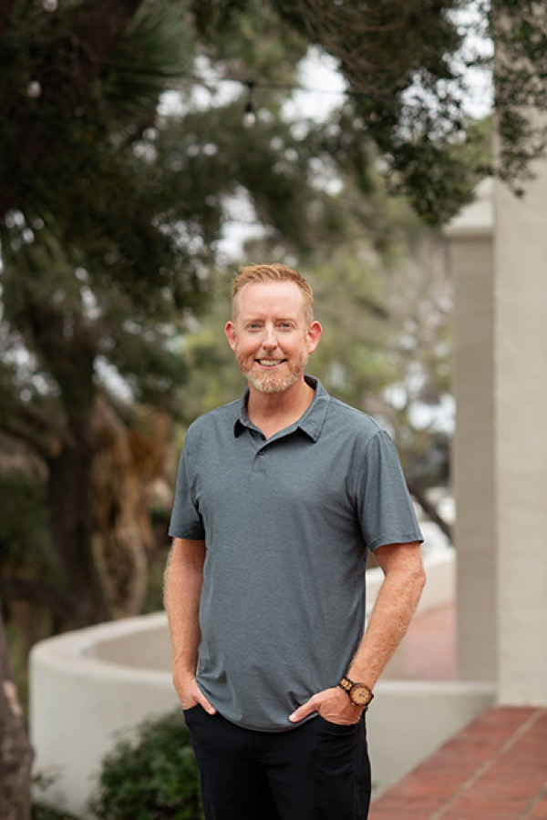
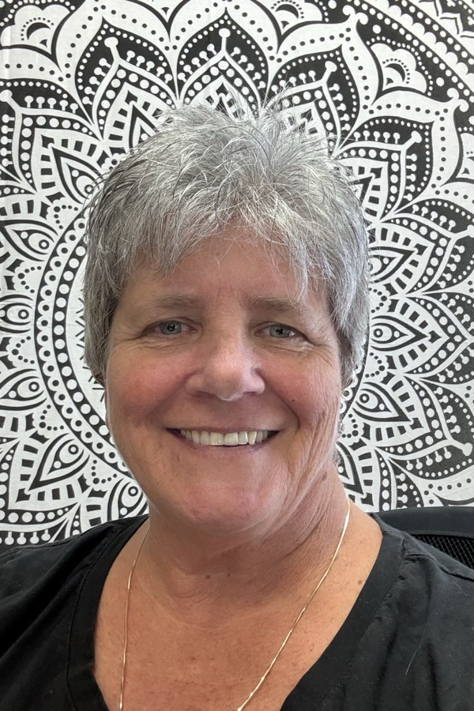
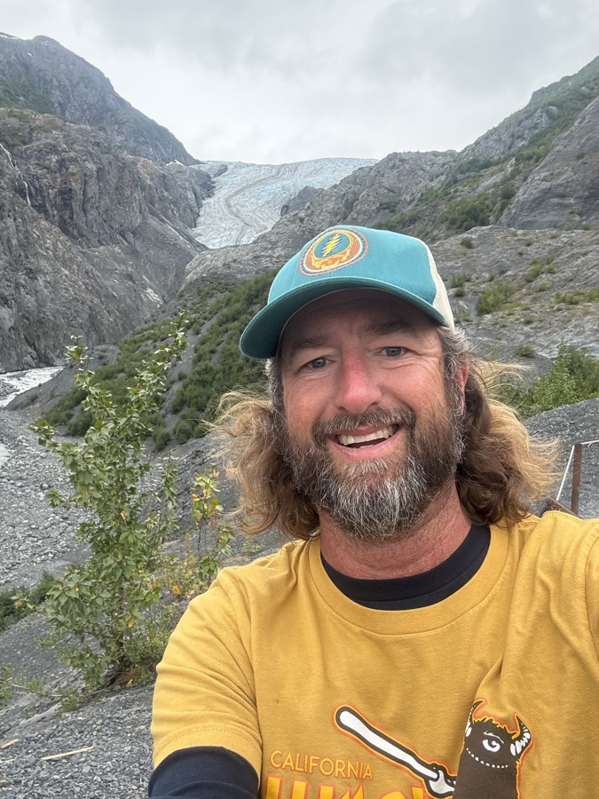
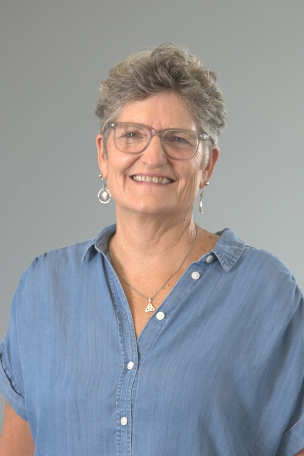

Our Team
The Aloka Foundation grew out of the Life Works community: people who contribute to connection, walking shoulder to shoulder with those we support in building and co-creating communities that foster the good life we all seek.
Co-Founder

Co-Founder, The Aloka Foundation · Executive Director, Life Works
Kirk co-founded the Aloka Foundation to provide a boost and a bridge beyond what government-funded services can offer. Having worked in the human services field since 1998, Kirk joined Life Works in 2007 and now serves as its Executive Director with an emphasis on Creative Design and Wellbeing. As a Mindfulness Meditation Teacher, Kirk invites people to explore the intersection of mindfulness practices and person-centered planning.
Co-author (with Beth Gallagher) of Intentional Teaming: Shifting Organizational Culture and co-creator of Liberty Plan, Kirk is committed to realizing the highest potential in people while asking Beth Mount and John O’Brien’s question “What More Is Possible?”
As Co-Founder of the Aloka Foundation, Kirk hopes to bring a new consciousness to the community for people living on the margins. Aloka, which means light, shines its mission and purpose in two directions. In one direction, Aloka shines its light on the story of Life Works and the humans who partner together in the spirit of Inclusion. In the other direction, a path. A bright light, illuminating a path for all with whom we partner to clearly see an emerging future of possibilities.
“When we’re able to slow down, connect with our breath, connect with each other, connect with the land and honor the interconnectivity of all beings, we slowly begin to see our unique path emerge with clarity. My commitment to the Aloka Foundation and its mission keeps me grounded on this earth and with my community. One breath, one step, one heartbeat at a time.”
Co-Founder

Co-Founder of the Aloka Foundation · Founder & CEO, Life Works
Beth is the founder, owner, and CEO of Life Works, which she started in 2004. Her work with people with developmental disabilities began just weeks after graduating from California State University, Chico in 1986 with degrees in Child Development and Psychology. Beth has spent the past three-plus decades creating unique and specific support strategies for individuals who have been underserved within the developmental disability system, sharing her gift of curiosity by asking “what more is possible?” for the people Life Works supports: How can we create opportunities for him to contribute? How can the community benefit from his gifts?
Because Beth has chosen to work with people who have been historically underserved or misrepresented, she has spent a great deal of time studying methods of design and strategy that allow people to be heard and understood as individuals. She is the co-creator of the planning method Liberty Plan, used as a facilitation tool for individuals, groups, families, and agencies, and she collaborated with Kirk Hinkleman to write Intentional Teaming: Shifting Organizational Culture, a book that looks at initiatives to appreciate the unique gifts of the people providing direct support.
“I choose to serve on the Aloka Foundation board to support marginalized populations—specifically people with intellectual/developmental disabilities (I/DD), the unhoused, children, and families.
“My involvement is part of a broader commitment to move away from working in isolation or judgment and instead focus on partnering, invitation, and collaboration.”
Board Member

Board Member, The Aloka Foundation · Human Resources & Talent Acquisition
Matt is a human resources and talent acquisition professional with more than 25 years of experience in San Diego’s biotech, diagnostics, and medical device industries. Growing up in a military family that relocated every two to three years, Matt learned early on to adapt to new environments, build relationships, and engage with his community. He is eager to support the Aloka Foundation’s mission and growth. Matt holds a B.S. in Communications from James Madison University in Virginia.
“I am inspired to be part of the Aloka Foundation to do my small part to shine a light on the gifts, hopes, and needs of people in our community—creating greater opportunity, inclusion, and dignity for those whose voices and potential can be overlooked.”
Board Member

Board Member, The Aloka Foundation · Senior Writer, Carlsbad Magazine
Wendy Hinman is Carlsbad’s storyteller. She has been Senior Writer for Carlsbad Magazine for over 20 years. Wendy uncovers for locals and visitors, Carlsbad’s distinctive geography and human topography. She also moonlights as an Adventure Specialist at North Coast Calvary Chapel. She designs experiences for disciples of Jesus to discover their unique purpose in being. Wendy and John, her husband of 44 years, have seven adult children and seven grandchildren.
“It is important for me to serve on the Aloka Foundation Board because I value serving my community where voices need to be heard as a collective, and to give a voice to those who may find it difficult to raise their own.”